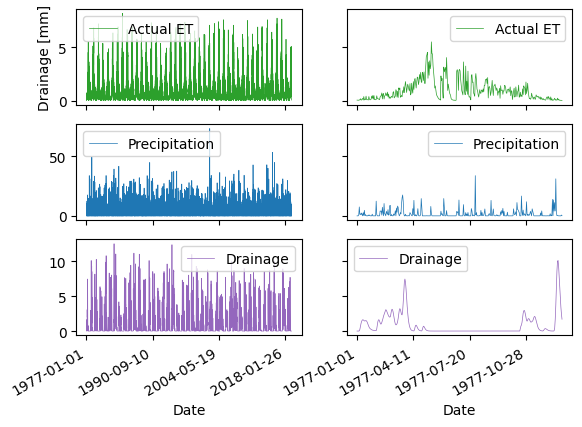

Save River Valley#
from edcrop import edcrop
import os
import pandas as pd
import matplotlib.pyplot as plt
import warnings
warnings.simplefilter(action='ignore', category=FutureWarning)
wdir = os.path.join(os.getcwd(), 'edcrop')
os.chdir(wdir)
yaml = os.path.join(wdir, 'yaml_files/default.yaml')
edcrop.run_model(yaml=yaml)
C:\Users\au701230\AppData\Roaming\Python\Python310\site-packages\pandas\core\arrays\masked.py:60: UserWarning: Pandas requires version '1.3.6' or newer of 'bottleneck' (version '1.3.4' currently installed).
from pandas.core import (
Read input file C:\Users\au701230\OneDrive - Aarhus Universitet\Documents\Projects\edcrop\edcrop\yaml_files/default.yaml.
Loop through simulations.
Climate data file: C:\Users\au701230\OneDrive - Aarhus Universitet\Documents\Projects\edcrop\edcrop\data\Weatherdata_S1.edcrop_wf.
Soil parameter values: use default.
Crop parameter values: use default.
Model parameter values: update from input file.
ed:
plotseries: false
prlistd: Date T P Ep I Ea Dsum Db Dmp
prlisty: P Ep I Ea Dsum Db Dmp
wbfunc: ed
===> Run Station1_JB1_WW_ed
---------------------------------------------------------------------------
TypeError Traceback (most recent call last)
Cell In[1], line 14
10 os.chdir(wdir)
12 yaml = os.path.join(wdir, 'yaml_files/default.yaml')
---> 14 edcrop.run_model(yaml=yaml)
File ~\WPy64-31090\python-3.10.9.amd64\lib\site-packages\edcrop\edcrop.py:3099, in run_model(yaml, log)
3096 # Write and plot output
3097 begin_name = (clim + "_" + soil + "_" + crop + "_"
3098 + model)
-> 3099 ts.print_from_dictionary(begin_name)
3100 if mp.plotseries:
3101 ts.plot_time_series(sd.soilname, cd.cropname,
3102 begin_name)
File ~\WPy64-31090\python-3.10.9.amd64\lib\site-packages\edcrop\edcrop.py:376, in TimeSeries.print_from_dictionary(self, fname)
372 n=len(self.prlist_y)
373 if n>0:
374 # df2=df.resample('A',how=sum)
375 #df2.replace('non n')
--> 376 self.df2=self.df.resample('A').sum()
377 colalias=[]
378 for i in range(0,len(self.prlist_y)):
File ~\AppData\Roaming\Python\Python310\site-packages\pandas\core\resample.py:1184, in Resampler.sum(self, numeric_only, min_count, *args, **kwargs)
1182 maybe_warn_args_and_kwargs(type(self), "sum", args, kwargs)
1183 nv.validate_resampler_func("sum", args, kwargs)
-> 1184 return self._downsample("sum", numeric_only=numeric_only, min_count=min_count)
File ~\AppData\Roaming\Python\Python310\site-packages\pandas\core\resample.py:1782, in DatetimeIndexResampler._downsample(self, how, **kwargs)
1779 # we are downsampling
1780 # we want to call the actual grouper method here
1781 if self.axis == 0:
-> 1782 result = obj.groupby(self._grouper).aggregate(how, **kwargs)
1783 else:
1784 # test_resample_axis1
1785 result = obj.T.groupby(self._grouper).aggregate(how, **kwargs).T
File ~\AppData\Roaming\Python\Python310\site-packages\pandas\core\groupby\generic.py:1432, in DataFrameGroupBy.aggregate(self, func, engine, engine_kwargs, *args, **kwargs)
1429 kwargs["engine_kwargs"] = engine_kwargs
1431 op = GroupByApply(self, func, args=args, kwargs=kwargs)
-> 1432 result = op.agg()
1433 if not is_dict_like(func) and result is not None:
1434 # GH #52849
1435 if not self.as_index and is_list_like(func):
File ~\AppData\Roaming\Python\Python310\site-packages\pandas\core\apply.py:187, in Apply.agg(self)
184 kwargs = self.kwargs
186 if isinstance(func, str):
--> 187 return self.apply_str()
189 if is_dict_like(func):
190 return self.agg_dict_like()
File ~\AppData\Roaming\Python\Python310\site-packages\pandas\core\apply.py:603, in Apply.apply_str(self)
601 else:
602 self.kwargs["axis"] = self.axis
--> 603 return self._apply_str(obj, func, *self.args, **self.kwargs)
File ~\AppData\Roaming\Python\Python310\site-packages\pandas\core\apply.py:693, in Apply._apply_str(self, obj, func, *args, **kwargs)
691 f = getattr(obj, func)
692 if callable(f):
--> 693 return f(*args, **kwargs)
695 # people may aggregate on a non-callable attribute
696 # but don't let them think they can pass args to it
697 assert len(args) == 0
File ~\AppData\Roaming\Python\Python310\site-packages\pandas\core\groupby\groupby.py:3146, in GroupBy.sum(self, numeric_only, min_count, engine, engine_kwargs)
3141 else:
3142 # If we are grouping on categoricals we want unobserved categories to
3143 # return zero, rather than the default of NaN which the reindexing in
3144 # _agg_general() returns. GH #31422
3145 with com.temp_setattr(self, "observed", True):
-> 3146 result = self._agg_general(
3147 numeric_only=numeric_only,
3148 min_count=min_count,
3149 alias="sum",
3150 npfunc=np.sum,
3151 )
3153 return self._reindex_output(result, fill_value=0)
File ~\AppData\Roaming\Python\Python310\site-packages\pandas\core\groupby\groupby.py:1906, in GroupBy._agg_general(self, numeric_only, min_count, alias, npfunc, **kwargs)
1896 @final
1897 def _agg_general(
1898 self,
(...)
1904 **kwargs,
1905 ):
-> 1906 result = self._cython_agg_general(
1907 how=alias,
1908 alt=npfunc,
1909 numeric_only=numeric_only,
1910 min_count=min_count,
1911 **kwargs,
1912 )
1913 return result.__finalize__(self.obj, method="groupby")
File ~\AppData\Roaming\Python\Python310\site-packages\pandas\core\groupby\groupby.py:1998, in GroupBy._cython_agg_general(self, how, alt, numeric_only, min_count, **kwargs)
1995 result = self._agg_py_fallback(how, values, ndim=data.ndim, alt=alt)
1996 return result
-> 1998 new_mgr = data.grouped_reduce(array_func)
1999 res = self._wrap_agged_manager(new_mgr)
2000 if how in ["idxmin", "idxmax"]:
File ~\AppData\Roaming\Python\Python310\site-packages\pandas\core\internals\managers.py:1472, in BlockManager.grouped_reduce(self, func)
1470 result_blocks = extend_blocks(applied, result_blocks)
1471 else:
-> 1472 applied = blk.apply(func)
1473 result_blocks = extend_blocks(applied, result_blocks)
1475 if len(result_blocks) == 0:
File ~\AppData\Roaming\Python\Python310\site-packages\pandas\core\internals\blocks.py:393, in Block.apply(self, func, **kwargs)
387 @final
388 def apply(self, func, **kwargs) -> list[Block]:
389 """
390 apply the function to my values; return a block if we are not
391 one
392 """
--> 393 result = func(self.values, **kwargs)
395 result = maybe_coerce_values(result)
396 return self._split_op_result(result)
File ~\AppData\Roaming\Python\Python310\site-packages\pandas\core\groupby\groupby.py:1973, in GroupBy._cython_agg_general.<locals>.array_func(values)
1971 def array_func(values: ArrayLike) -> ArrayLike:
1972 try:
-> 1973 result = self._grouper._cython_operation(
1974 "aggregate",
1975 values,
1976 how,
1977 axis=data.ndim - 1,
1978 min_count=min_count,
1979 **kwargs,
1980 )
1981 except NotImplementedError:
1982 # generally if we have numeric_only=False
1983 # and non-applicable functions
1984 # try to python agg
1985 # TODO: shouldn't min_count matter?
1986 # TODO: avoid special casing SparseArray here
1987 if how in ["any", "all"] and isinstance(values, SparseArray):
File ~\AppData\Roaming\Python\Python310\site-packages\pandas\core\groupby\ops.py:831, in BaseGrouper._cython_operation(self, kind, values, how, axis, min_count, **kwargs)
829 ids, _, _ = self.group_info
830 ngroups = self.ngroups
--> 831 return cy_op.cython_operation(
832 values=values,
833 axis=axis,
834 min_count=min_count,
835 comp_ids=ids,
836 ngroups=ngroups,
837 **kwargs,
838 )
File ~\AppData\Roaming\Python\Python310\site-packages\pandas\core\groupby\ops.py:541, in WrappedCythonOp.cython_operation(self, values, axis, min_count, comp_ids, ngroups, **kwargs)
537 self._validate_axis(axis, values)
539 if not isinstance(values, np.ndarray):
540 # i.e. ExtensionArray
--> 541 return values._groupby_op(
542 how=self.how,
543 has_dropped_na=self.has_dropped_na,
544 min_count=min_count,
545 ngroups=ngroups,
546 ids=comp_ids,
547 **kwargs,
548 )
550 return self._cython_op_ndim_compat(
551 values,
552 min_count=min_count,
(...)
556 **kwargs,
557 )
File ~\AppData\Roaming\Python\Python310\site-packages\pandas\core\arrays\datetimelike.py:1669, in DatetimeLikeArrayMixin._groupby_op(self, how, has_dropped_na, min_count, ngroups, ids, **kwargs)
1666 if dtype.kind == "M":
1667 # Adding/multiplying datetimes is not valid
1668 if how in ["sum", "prod", "cumsum", "cumprod", "var", "skew"]:
-> 1669 raise TypeError(f"datetime64 type does not support {how} operations")
1670 if how in ["any", "all"]:
1671 # GH#34479
1672 warnings.warn(
1673 f"'{how}' with datetime64 dtypes is deprecated and will raise in a "
1674 f"future version. Use (obj != pd.Timestamp(0)).{how}() instead.",
1675 FutureWarning,
1676 stacklevel=find_stack_level(),
1677 )
TypeError: datetime64 type does not support sum operations
df = pd.read_csv('Station1_JB1_WW_ed_wb.out')
df.columns = df.columns.str.replace(' ', '')
df_sub = df.iloc[0:365,:]
fig, axs = plt.subplots(3,2, sharex = 'col', sharey='row')
df.plot.line(x='Date', y='Ea', ax=axs[0,0], c='C2', label='Actual ET', lw=0.5)
df.plot.line(x='Date', y='P', ax=axs[1,0], c='C0', label='Precipitation', lw=0.5)
df.plot.line(x='Date', y='Dsum', ax=axs[2,0], c='C4', label='Drainage', lw=0.5)
df_sub.plot.line(x='Date', y='Ea', ax=axs[0,1], c='C2', label='Actual ET', lw=0.5)
df_sub.plot.line(x='Date', y='P', ax=axs[1,1], c='C0', label='Precipitation', lw=0.5)
df_sub.plot.line(x='Date', y='Dsum', ax=axs[2,1], c='C4', label='Drainage', lw=0.5)
axs[0,0].set_ylabel('Drainage [mm]')
fig.autofmt_xdate()
